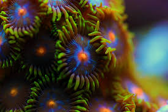

Zoanthid Care
Zoanthid Care
Zoanthids, often called Zoas, are colorful button-shaped polyps that are very popular in reef aquariums. They are known for their bright patterns, wide variety of colors, and relatively simple care requirements. Zoas can be a good choice for both beginner and experienced reef keepers.

Location
Zoanthids are found in warm, shallow reef environments throughout the Indo-Pacific, including Fiji, Tonga, and Indonesia. They often grow in colonies across rocks, reef flats, and areas with steady water movement.
Lighting
Zoanthids can adapt to a wide range of lighting conditions. Moderate lighting often helps maintain strong coloration, although some varieties can tolerate higher or lower light levels. New colonies should be introduced to stronger light gradually.
- Low Light: 30–50 PAR
- Medium Light: 50–150 PAR
- High Light: More than 150 PAR, used cautiously to avoid bleaching
Water Flow
Moderate, indirect water flow is usually ideal. Good flow helps prevent debris from settling on the polyps and supports healthy growth. Avoid placing Zoas directly in a powerful stream of water because the polyps may remain closed.
Feeding
Zoanthids receive much of their energy through photosynthesis, but they may also benefit from small-particle coral foods. Finely powdered coral foods or phytoplankton may help support growth when used carefully and in appropriate amounts.

Propagation
Zoanthids are generally easy to propagate because they grow in connected mats. Small sections can be carefully separated and attached to coral plugs or pieces of rock using coral-safe glue.
A Word of Caution
Some Zoanthids and closely related corals may contain palytoxin, which can be extremely dangerous if mishandled. Wear gloves and eye protection, avoid touching your face, keep the work area well ventilated, and never boil or heat live rock that may contain Zoanthids.
Acclimation
Zoanthids should be acclimated gradually to changes in salinity, temperature, and lighting. Begin with lower placement in the aquarium, observe how the polyps respond, and move them into brighter areas slowly if necessary.